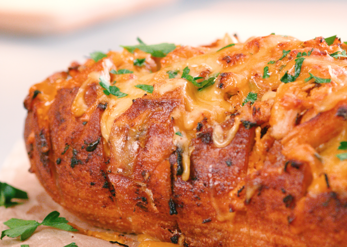

Michelob Ultra's Honey Sriracha Pull Apart Bread

Ingredients
For the pull-apart bread:
- 2 large boneless skinless organic chicken breasts, shredded
- Salt and pepper, to taste
- Onion powder, to taste
- Garlic powder, to taste
- 1 large loaf of organic boule or French bread
- 1 cup Sriracha
- 1 cup organic honey
- 1/2 sweet onion, grated
- 1 cup organic red onion, sliced
- 3 cups mild cheddar cheese, grated
- 1/2 cup organic cilantro, chopped
- 2/3 cup organic butter
For the malty barley barbecue dip:
- 1 1/2 cups organic barbecue sauce
- 3 tablespoons organic barley malt syrup
- 2 cloves garlic, minced
Instructions
-
Preheat oven to 375 degrees. Season chicken with salt, onion and garlic powder,
then place on a baking sheet and bake for 15 to 20 minutes. Once tender and
cooked through, remove from the oven, allow to cool and gently pull apart into
shreds. Set aside.
-
Cutting across the loaf, cube the top half, make sure to not cut through the
bottom of the loaf.
-
In a bowl combine Sriracha, honey, salt, chicken, grated onion, red onion,
cheese, cilantro and butter. Once ingredients are combined, stuff into the
slices in the top of the bread allowing for an abundant amount of cheese,
chicken and onion to over flow onto the crust.
-
Place stuffed loaf onto a sheet tray and bake for 15 to 20 minutes until
cheese is a delicious combination of gooey and crispy. Sprinkle with cilantro.
- Mix all sauce ingredients together.
-
Serve bread piping hot with sauce on the side paired with an ice cold Michelob
ULTRA Pure Gold.